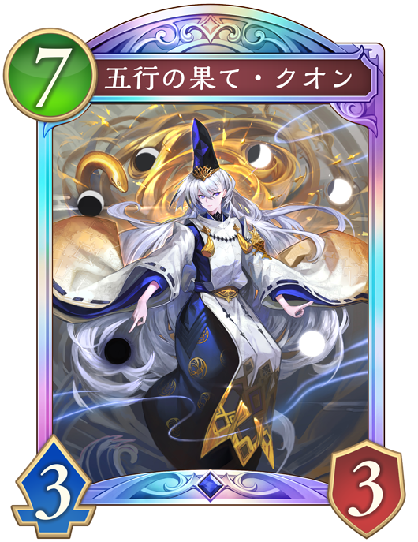
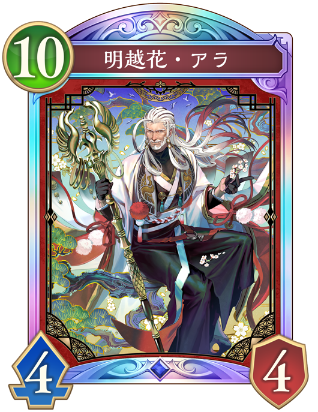

Q. 次のターンに予測できる相手の行動で危険なものは？
 運命の黄昏・オーディン
運命の黄昏・オーディン
危険度：💀💀💀
盤面を消滅させながら超進化してリーダに7点ダメージを受けてしまう。 スペルウィッチではピン刺しやそもそも入ってないことが多いので少し危険度が下がる。

五行の果て・クオン
危険度：💀💀💀💀
エンハンスで場に出した他の式神を破壊して「式神・貴人」を出し、その攻撃力と体力はこのターン中破壊した式神の攻撃力と体力分上がる。 そのため、基本的には9/10のスタックとなり、その上オーラも持っている。 「五行の果て・クオン」の超進化時で「式神・貴人」は疾走を持ち、ぶっ飛び込みで10ダメージまで出る。

明越花・アラ
危険度：💀💀
ファンファーレで相手の場のフォロワー1体に10ダメージ与えてくる。 進化時に他のフォロワーがいれば、そのフォロワーを「壮麗なる隼」に変身させ疾走の4点ダメージを受ける。 負けはしないが詰められる。
 マナリアフレンズ・アン&グレア
マナリアフレンズ・アン&グレア
危険度：💀
盤面展開するがリーダーへのダメージは無いため危険度は無い。
予想の説明(クリックすると表示されるよ)
この状況では相手は先攻10ターン目で超進化が1つ残っているので、「五行の果て・クオン」がプレイされる可能性が高い。
「鬼呼びの術」が一緒に使われ自壊すると、13点までダメージが伸びる。
そのため、リーダーの体力が10点以上で盤面にフォロワーを立てないか、守護を最低3面以上並べることが有効である。